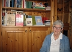
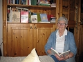
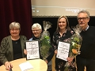
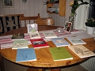
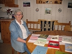
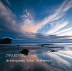
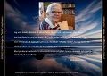
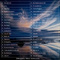

Elsa Margareta (Meta) Ågren Andreasson
Diktare på Burträskbondska, med sång och gitarr, text till Kvarnspelet.
| Född: | 1933-09-17 Bygdsiljum 10, Burträsk fs, Burträsk sn. [1] |
|---|
| Omflyttad till: | 1934 Åbyn 20:21, S Åbyn postlåda 1285, Burträsk fs, Skellefteå kn. [2] |
|---|
| Levde: | 1947 Åbyn 20:21, S. Åbyn, Burträsk fs, Burträsk sn. [3] |
|---|
| Levde: | 2018 Burträsk, Burträsk fs, Skellefteå kn. |
|---|
| Vigsel: | 1954-06-25 Åbyn 20:21, S. Åbyn, Burträsk fs, Burträsk sn. [4] |
|---|
| Levde: | 1960 Åbyn 20:21, S. Åbyn, Burträsk fs, Burträsk sn. [4] |
|---|
| Levde: | 1971 Åbyn 20:21, S. Åbyn, Burträsk fs, Burträsk kn. [5] |
|---|
| Levde: | 1981 Åbyn 20:21, S Åbyn postlåda 1285, Burträsk fs, Skellefteå kn. [6] |
|---|
| Levde: | 1991 Åbyn 20:21, S. Åbyn 99, Burträsk fs, Skellefteå kn. [7] |
|---|
| Barn: |
|---|
| Siv Mona Ingela Andreasson (1956 - ) |
| Gun Lena Margareta Andreasson (1958 - ) |
| Edit Boel Carina Andreasson (1964 - ) |
Noteringar
Margareta "Meta" Andreasson
Utgivna diktsamlingar:
Ängsblommor 1979
Fyrklöver 1981
Hemma i byn 1987
Klätterträdet 1991
Glädjebarn 1993
Verkligheter 1994
Pärlbandet 1995
Rimligheter 1998
Verser från Ostrike 2001
Härliga Västerbotten 2004
Småprat 2010
Mellan hägg och syren 2017
Personhistoria
| Årtal | Ålder | Händelse |
|---|
| 1933 |
|
Födelse 1933-09-17 Bygdsiljum 10, Burträsk fs, Burträsk sn [1] |
| 1934 |
|
Omflyttad till 1934 Åbyn 20:21, S Åbyn postlåda 1285, Burträsk fs, Skellefteå kn [2] |
| 1947 |
|
Levde 1947 Åbyn 20:21, S. Åbyn, Burträsk fs, Burträsk sn [3] |
| 1954 |
20 år |
Vigsel Svante Sigvard Andreas Andreasson 1954-06-25 Åbyn 20:21, S. Åbyn, Burträsk fs, Burträsk sn [4] |
| 1956 |
22 år |
Dottern Siv Mona Ingela Andreasson föds 1956-06-27 Åbyn 20:21, S Åbyn, Burträsk fs, Burträsk sn [4] |
| 1958 |
24 år |
Dottern Gun Lena Margareta Andreasson föds 1958-05-10 Åbyn 20:21, S Åbyn, Burträsk fs, Burträsk sn [4] |
| 1960 |
|
Levde Svante Sigvard Andreas Andreasson 1960 Åbyn 20:21, S. Åbyn, Burträsk fs, Burträsk sn [4] |
| 1964 |
31 år |
Dottern Edit Boel Carina Andreasson föds 1964-09-24 Åbyn 20:21, S Åbyn, Burträsk fs, Burträsk kn [8] |
| 1971 |
|
Levde Svante Sigvard Andreas Andreasson 1971 Åbyn 20:21, S. Åbyn, Burträsk fs, Burträsk kn [5] |
| 1981 |
|
Levde Svante Sigvard Andreas Andreasson 1981 Åbyn 20:21, S Åbyn postlåda 1285, Burträsk fs, Skellefteå kn [6] |
| 1991 |
|
Levde Svante Sigvard Andreas Andreasson 1991 Åbyn 20:21, S. Åbyn 99, Burträsk fs, Skellefteå kn [7] |
| 1992 |
59 år |
Fadern Nils Elof Ågren dör 1992-11-30 Björnåkersg 20, Burträsk, Burträsk fs. Skellefteå kn [9] |
| 1993 |
59 år |
Modern Hildor (Hilda) Nikolina Fältskytt Larsson dör 1993-09-02 Björnåkersg 20, Burträsk, Burträsk fs. Skellefteå kn [10] |
| 2008 |
75 år |
Maken Svante Sigvard Andreas Andreasson dör 2008-12-11 Södra Åbyn 99, Burträsk fs, Skellefteå kn [11] |
| 2018 |
|
Levde 2018 Burträsk, Burträsk fs, Skellefteå kn |
Dokument
Källor
| [1] | SCB Födda AC Biurträsk 146/1933, Burträsk (AC) AIIa:3e (1925-1943) Bild 3080 / sid 1700 |
| |
| | |
| [2] | Burträsk (AC) AIIa:3b (1925-1943) Bild 2900 / sid 632 |
| |
| | |
| [3] | Mtl Sveriges befolkning 1950 |
| |
| | |
| [4] | Mtl Sveriges befolkning 1960 |
| |
| | |
| [5] | Mtl Sveriges befolkning 1970 |
| |
| | |
| [6] | Mtl Västerbottens län 1981 |
| |
| | |
| [7] | Mantalslängd 1991, Västerbottens län |
| |
| | |
| [8] | Mtl Västerbottens län 1971 |
| |
| | |
| [9] | RTB 92 / SPAR 92f / SPAR 95 |
| |
| | |
| [10] | RTB 93 / SPAR 92f / SPAR 95 |
| |
| | |
| [11] | FK 09 / man91 |
| |
|
|  |
2018-01-25. Margareta "Meta" Andreasson.
Foto: Jan Fredman
|
| |
|  |
2018-01-25. Margareta "Meta" Andreasson.
Foto: Jan Fredman
|
| |
|  |
2018-01-21. Margareta ”Meta” Andreasson (2:a fr vä) fick BBU:s speciella hedersomnämnande 2017.
I juryns motivering står:
”Meta får hedersomnämnandet för sitt mångåriga engagemang att hålla burträskbondskan levande. Hon släppte under året sin tolfte diktsamling”.
- Det känns både trevligt och hedrande, säger Meta. Meta Andreasson 2:a fr. vä
Text och foto: Waldemar Mellquist
|
| |
|  |
2018-01-25. Margareta "Meta" Andreasson.
Foto: Jan Fredman
|
| |
|  |
2018-01-25. Margareta "Meta" Andreasson.
Foto: Jan Fredman
|
| |
|  |
| 2018 |
| |
|  |
| 2018 |
| |
|  |
| 2018 |
|
{kind=link}
{kind=link}
{kind=link}
{kind=link}
{kind=link}
{kind=link}
{kind=link}
{kind=link}